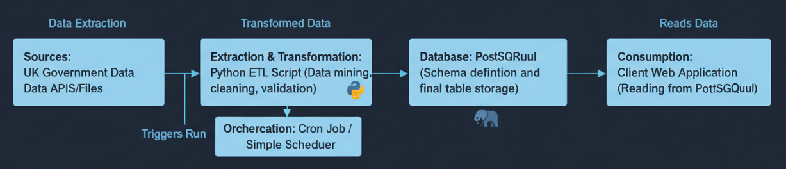

Project Gallery
Interactive dashboards and architectural deep-dives demonstrating end-to-end Data Engineering capabilities.
Interactive Dashboards
Crimes in India BI Report
Analysis of NCRB data on age group and region, facilitated by a GCP pipeline.

Client Business Performance Dashboard
Power BI visualization showing key metrics and performance trends (HCLTech/Blackcoffer).
Sentiment Analysis Results
Visualization of sentiment scores across 200+ scraped websites.
Code Deep Dives: Architecture & Logic
A look under the hood at the critical code components for ETL, FastAPI services, and infrastructure-as-Code.
ETL Transformation Logic (Python)
Snippet of the Python function responsible for cleaning and refining UK government datasets before loading to PostgreSQL (Project 3).
Core Transformation Function
# Function to standardize currency and date formats def clean_and_transform(df): # Drop rows where key identifier is missing df = df.dropna(subset='record_id') # Convert currency to standard float format df['amount'] = df['amount'].str.replace('£', '') df['amount'] = df['amount'].str.replace(',', '').astype(float) # Standardize all date columns to YYYY-MM-DD for col in ['issue_date', 'expiry_date']: df[col] = pd.to_datetime(df[col], errors='coerce') # Feature Engineering: Calculate duration in days df['duration_days'] = (df['expiry_date'] - df['issue_date']).dt.days return df
ETL Architecture Flow
Diagram: Automated Data Mining, Cleaning and Loading (ETL)
FastAPI Endpoint (GCP Cloud Run)
Demonstrating a Python API endpoint used to serve clean data for integration with Power Apps and Power Automate (HCLTech Automation Solution).
Cloud Run CI/CD Architecture

Diagram: GCP CI/CD for Automation Endpoint
FastAPI Endpoint Code
# main.py for Cloud Run deployment from fastapi import FastAPI, HTTPException from typing import List, Dict app = FastAPI() # Mock database connection / BigQuery interface DATA_SOURCE = get_bigquery_client() # Endpoint to retrieve processed client data @app.get("/api/v1/client_data", response_model=List[Dict]) async def get_client_data(): try: query = "SELECT * FROM client_dataset.latest_snapshot" results = DATA_SOURCE.query(query).to_dataframe() return results.to_dict('records') except Exception as e: raise HTTPException( status_code=500, detail=f"Database error: {e}" )